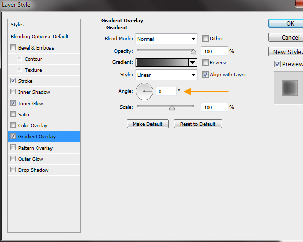

In this Photoshop tutorial we’ll explore how to create a shiny or glossy shield easily in Photoshop from scratch.
Shields are common in advertising design. We see them everywhere in web as web graphics also. They are used as a symbol for assurance, protection, emphasis for example. Purpose is to create a positive impact about the product to buyers or users. Here you will learn how to approach artworks like this in Photoshop, where creating photo-realism through Photoshop is the objective.
Step 1
Open a new file (File > New) in Adobe Photoshop with the following settings. Save the file as “Shield.psd”. During work remember to use often File > Save (Ctrl + S) to save and update the file.
Step 2
Select the Polygon Tool from the Toolbox. Go to the Option Bar above. At the right end, change the Sides Field value to 3. Then drag a triangle like in the screen shot below.
Matching exactly is not important. But if you want, then follow along. First open Window > Info. Then click on the “Plus” sign besides the X, Y coordinates and select Pixels as unit. Now target the polygon layer in the Layers Panel and select the Move Tool (V). Then Menu> Edit > Transform Path > Scale.
Now in the Option Bar enter matching values from the screen shot below.
To center the triangle, target both Polygon and Background layer. Click Align Horizontal and Align Vertical buttons in the Option Bar.
This triangle shape is a vector shape, which consists of points and lines. The advantage of working with vector shapes is we can change the shapes later easily by editing the points. Next we will edit the three points of this triangle to change its shape into a shield shape.
Step 3
Next select the convert Anchor Point Tool and position the cursor near the top left corner of the triangle. If you look at the cursor now you will see a white arrow icon, which is not the Convert Anchor Point Tool icon. The white arrow is the icon of the Direct Selection Tool. So why is Photoshop not showing the Convert Anchor Point Tool icon? Convert Anchor Point Tool is only visible when an Anchor Point is selected and it is on top of the selected point. So now drag a selection (i.e. marquee selection) around that top left corner point of the triangle with that Direct Selection Tool.
Position cursor again on top of selected point. Now you will see the white arrow icon is change into the Convert Anchor Point Tool icon, which looks like an inverted “V”. Click on that selected anchor point with the Convert Anchor Point Tool and drag towards upper right. As a result, two handles will extend from that Anchor Point at both sides. Anchor Points in Photoshop are Corner and Smooth anchor points. Smooth Anchor Points are with handles only. We use Corner Anchor Points for creating shapes with straight lines and Smooth Anchor Point for curved lines. These handles are Direction lines. If you look carefully, then you will find a solid circle shape at the end of each Direction Line (i.e. handle). This circle is the Direction Point. By clicking and dragging the Direction Points we can control the curved lines. But remember to change your tool to the Direct Selection Tool (A) after converting the Anchor Point. We adjust the Direction Lines with the Direct Selection Tool, which will do shortly.
Still working with the Convert Anchor Point Tool, press the “ALT” key and drag the lower Direction Point towards the upper right.
Step 4
Next use the Convert Anchor Point Tool to edit the upper right corner Anchor Point similarly. First we drag the Direction Lines out.
Then “ALT” drag with the Convert Anchor Point Tool to rotate the Direction Line from lower right to upper left.
Step 5
Using the same process extend the Direction Lines from the lower Anchor Point.
Now rotate the Direction Lines of the lower Anchor Point.
We don’t need the Convert Anchor Point Tool anymore, because all Anchor Points now Smooth Anchor Points. Now we will use the Direct Selection Tool to adjust the shape further. Select the Direction Selection Tool, then push and pull all the Direction Points alternatively to edit the shape more.
Below is the final shield shape.
Step 6
Rename the Polygon shape layer to “shield outer” by double clicking on the text “polygon 1” in the Layers Panel. Right click on the layer and select Rasterize as we are not editing the shape layer any more. Rasterize converts the shape layer into a normal layer.
Step 7
The shield is now looking like a flat solid black shape. We will use Layer Styles to change this flat black shape into that shiny, glossy looking shape. Double click on the “shield outer” layer to open the Layer Style window. We start with the Bevel & Emboss by clicking on the “Bevel & Emboss” text in the left side panel. Match settings from the screen shot below.
Click on the downward facing arrow beside the Gloss Contour thumbnail to open the Contour picker. Select “Ring” as the contour type.
Then click on “Contour” text in left panel below the Bevel & Emboss. This will adjust the bevel shape.
Step 8
Match Inner Glow settings with those shown in the image below. Then in the Contour Picker of Inner Glow select “Ring” as the contour type.
Step 9
Next is the Gradient Overlay. First match the settings from the screen shot.
Then click on the Gradient Bar near the “Gradient” text to open the Gradient Editor. In the Gradient Editor, click any empty area below the gradient bar to create new gradient color, known as “Gradient Stop”. Select any Gradient Stop by clicking on the Gradient Stop icon. Then color location field will be active below and you can enter specific value. In same way, click the color thumbnail at the left of the color location below to open the Color Picker. Then you can enter a specific RGB value beside the RGB fields in the Color Picker. To delete a Gradient Stop just click and drag it below the Gradient Bar, like you are dropping it.
Match the color locations and RGB values from the screen shot below in the Gradient Editor.
Here is the completed outer shield after the layer styles.
Step 10
Press the “D” key to change the Foreground and Background colors to default black and white. Then Ctrl click on the “shield outer” layer thumbnail to select. Then Menu > Select > Modify > Contract. Enter a value of 15 pixels in the Contract by field.
Step 11
With the selection still active, create a new layer on top of the “shield outer” layer by clicking the Create a new layer button below the Layers Panel. Fill the selection with black foreground color by pressing ALT + BACKSPACE keys.
Select > Deselect (CTRL + D). Rename the newly created layer to “shield base mid”.
Step 12
Double click on the “shield base mid” layer to open the Layer Style window. Match Inner Glow settings with those in the screen shot below.
Select Gaussian as the contour type.
Step 13
Then Gradient Overlay. First match the settings from the screen shot. Then click on the gradient bar to open the Gradient Editor.
Gradient Editor settings:
Step 14
Next Outer Glow. Select Gaussian as contour type.
Completed shield base mid layer style.
Step 15
CTRL click on “shield base mid” layer thumbnail to select. Then create a new layer on top of it with the name “shield inner”. Then Select > Modify > Contract and enter 15 pixels as the contract value. Then fill the selection with black color.
Step 16
Double click on the layer “shield inner” to open the Layer Styles. Below is the Bevel and Emboss settings:
Contour settings:
Step 17
Gradient Overlay settings:
Gradient Editor settings:
Step 18
Outer Glow settings:
Completed shield inner layer style.
Step 19
CTRL click on layer “shield inner” layer thumbnail to select. Then create a new layer on top of it with the name “shield core”. Then Select > Modify > Contract and enter 6 pixels as the contract value. Then fill the selection with RGB (0, 114, 188) color.
Step 20
Double click on the layer “shield core” to open the Layer Style. Below are the Inner Glow settings:
Satin settings:
Gradient Overlay settings:
Gradient Editor settings:

Shield core layer style completed.
Step 21
The surface of the blue shield core is reflective. Now we start creating the light reflections of this blue surface. The objective here is to show the reflective nature of the blue surface. For naming of all reflection layers we use the “refl” abbreviation. Select the “shield core” layer by CTRL clicking on layer thumbnail. Then create a new layer on top of layer “shield core” with the name “refl left mid”. Fill the selection with White (RGB 255, 255, 255).
Step 22
Still in layer “refl left mid”, deselect by pressing CTRL + D. Then select the Elliptical Marquee Tool from the Toolbox. Create a selection as in the screen shot below.
Step 23
Next we will select the rest of the left portion of the white area. But we want only one selection. While creating selections with selection tools like Elliptical Marquee Tool or Lasso Tool if you press SHIFT key, then you can add another selection to the existing selection/s. So select the Lasso Tool from the Toolbox, as we need a freehand selection here. Press the SHIFT key and notice there is an extra “+” icon below the Lasso Tool Icon. This suggests you are in add to selection mode.
Step 24
Delete the right portion of the white area outside the selection. Go to Select> Inverse.
Press the delete key and delete the right white portion.
Step 25
Deselect by pressing CTRL + D. Then from Filter > Blur > Gaussian Blur and type a value of 2 pixels in the radius field.
Step 26
Still in the “refl left mid” layer. Add a Layer Mask to this layer by clicking on the Add layer mask button below the Layers Panel. Now you have a white Layer Mask thumbnail beside the layer thumbnail.
A Layer Mask thumbnail with the color white means that layer is fully visible. Black means not visible. We want to blend the left white reflection area with the blue surface below it. Select a soft black color brush and change the Opacity to 50% in the Option Bar above. Now click on the layer mask thumbnail once to make sure the mask selected. Then start painting from the edge of the left side of the white portion. So we paint with black within the mask to hide that area. You can also paint with white to bring back the hidden white portion or make it visible again. This is a non-destructive process as we are not deleting the pixels. Creating and editing masks are an essential part of everyday Photoshop work. Experiment with the mask until you are satisfied with the look.
Step 27
Change your Brush Tool to Move Tool (V). Then change the opacity of this layer to 24%. Below is the final look of “refl left mid” layer.
Step 28
In the same way we created the white highlight shape of the “refl left mid” layer, create a new layer “refl top” on top of “refl left mid” layer. Check the screen shot below to match the position and the shape of the top reflection shape.
Then Filter > Blur > Gaussian Blur of 3 pixels value.
Next add a layer mask to this “refl top” and with black soft brush of 50% opacity, paint within the mask to hide the lower portion. See the screen shot below.
Step 29
CTRL click to select the “shield core” layer. Create a new reflection layer on top of layer “refl top” with the name “refl lower”. Fill the selection with white color. Then delete the right half of the shape by following the same technique we applied earlier.
Again CTRL click on to select this “refl lower” layer. Change your current tool to any selection tool, like Lasso Tool if it’s not already selected. Then right click within the selection and select Transform Selection.
Then right click again within the Transform Selection bounding box and select Distort. Then drag and push the handles to distort the selection as in screen shot below.

Press the ENTER key to apply the transformation. You can also click the Check Mark on the Options Bar above to apply the transformation. Then press the DELETE key to delete the selected area.
Apply a 1 pixel Gaussian Blur to the resulting white shape. Reduce the Opacity of the layer to 50%. Check the screen shot below.
Step 30
Using the same technique, create two new layers on top of the layer “refl lower”. Names will be “refl left side” and “refl right side”.
Then apply 1 pixel Gaussian Blur and change the layer opacity to 50% to both layers. This completes the shield core blue surface reflection. Below is the screen shot once done.
Step 31
Create a new layer with the name “ribbon front” on top of layer “refl right side”. Select the Rectangular Marquee Tool and drag a rectangular shape as in the screen shot below. Fill the selection with 50% Grey color. Color is not important here as we will create a layer style for the ribbon shortly.
Then Edit > Transform > Warp.
In the Options Bar select Arch as the warp type.
Next click and drag the top handle of the wrap bounding box to change the arch direction from upward to downward. As you can see Warp is a great choice for distorting objects easily in Photoshop. Press the ENTER key to apply the Arch transformation.
Step 32
Double click on the “ribbon front” layer to open the Layer Style window. First we will create the Stroke style.
Step 33
Then Inner Glow. We are changing the contour type here, accepting the default Linear Contour.
Step 34
Next Gradient Overlay settings:

Gradient Editor settings of Gradient Overlay:
Completed front ribbon layer style.
Step 35
Duplicate the “ribbon front” layer by right click on it and select Duplicate Layer. Make sure that the Move Tool (V) is your current tool and drag the layer below the “ribbon front” layer. Then press SHIFT + “UP” Arrow key couple of times to move the duplicate layer a little above the ribbon front.

Step 36
Select the Rectangular Marquee Tool and drag a selection as in the screen shot below.
Step 37
From Layer > New > Layer Via Cut. This will cut and paste the selected portion to a new layer. Then move these two layers towards the left and right as in the screen shot below.
Step 38
Again use the Rectangular Marquee Tool to select and delete or trim excess portions from both sides. Then rename them as “ribbon left end” and “riboon right end”.
Step 39
Next we will change the existing layer style of “ribbon left end” and “riboon right end” layers. But we will only adjust the Gradient Overlay. Stroke and Inner Glow is perfect. So first double click on the “ribbon left end” layer and open the Layer Style window. Below is the Gradient Overlay settings:
Gradient Editor of Gradient Overlay.
Step 40
Next double click on the “ribbon right end” layer and open the Layer Style window. In the Gradient Overlay, only change the Angle value to 0. This will rotate the gradient to the right side. No need to change the gradient in the Gradient Editor.

Below is the completed version of both left and right layer styles.
Step 41
Next we will create the connecting pieces for left and right sides. Create two layers on top of “ribbon right end” layer with names “ribbon left fold” and “ribbon left fold”. Use the Rectangular Marquee Tool to create rectangle shapes. Then Edit > Transform > Distort to fit them within the space of the ribbon front shape and ribbon end (i.e. left and right) shapes. Check the screen shot below.
Now we will create the layer styles. But we are not going to create them from scratch. In Photoshop you can copy paste layer style also. So first right click on the Layer Style icon (“fx”) of “ribbon left end” layer and select Copy Layer Style. Then right click on any empty space besides the layer name text of the “ribbon left fold” layer and select Paste Layer Style. Follow the same steps for “ribbon right fold” also, but this time copy the layer style from “ribbon right end”.
Step 42
Let’s modify the layer styles. First “ribbon left fold” layer style. We will only change the Gradient Overlay. Below is the Gradient Overlay settings:
Step 43
Next the “ribbon right fold” Gradient Overlay settings:
Completed left and right folds.
Step 44
Select the Polygonal Lasso Tool from the Toolbox. We use Polygonal Lasso Tool to easily create a selection with straight lines. In the “ribbon left end” layer, create a triangular selection like in the screen shot below with just three clicks.
Step 45
Press the DELETE key to delete the selected area. Similarly create a triangular selection and delete the portion from the “ribbon right end” layer also. Below is the completed version.
Step 46
Type “PREMIUM QUALITY” on top of the ribbon front with the Type Tool. I’m using 48 point Times New Roman. Then Edit > Transform > Warp and use the same Arch warp type as before. Distort the text to match the front ribbon.
Step 47
Double click on the text layer to open the Layer Style window. First Bevel and Emboss. Use the default Linear Contour.
Contour settings below Bevel & Emboss. Use the default Linear Contour.
Step 48
Next Color Overlay:
Step 49
Outer Glow settings. Use the default Linear Contour.
Step 50
Change the Opacity of the layer “refl top” to 50%.
Step 51
Create a new text layer on top of the previous text layer “premium content” and type “PSD” with 122 point Times New Roman. Color will be Black. Double click on the “PSD” layer to open the Layer Style Window. First Bevel & Emboss settings:
Color Overlay settings:
Outer Glow settings:
Drop Shadow settings:
Completed “PSD” layer style.
Step 52
Select the Custom Shape Tool from the Toolbar. Then in the Options Bar click to open the Custom Shape Picker, besides the Shape thumbnail at the right end. Then click on the Picker Option (gear icon) in the upper right corner. Select Objects from the drop down list. Then back in the Picker select 5 Point Star.
Step 53
Drag a star on top of the “PSD” text. This will create a Star shape layer. Let’s copy and paste the “PSD” layer style here. After pasting the layer style double click to open the Layer Style window. In the Bevel & Emboss change the size to 12 pixels.
Step 54
Drop Shadow settings:
Rename this layer “star mid” layer. Below is the completed star.
Step 55
Duplicate this “star mid” layer twice and rename them as “star left” and “star right” layers. Scale them down with Edit > Transform Path > Scale. Then copy and paste “star mid” layer style to them. Below is the completed version.
Step 56
CTRL click to select the “ribbon front” layer. Then create two layers with the names “ribbon front left refl” and “ribbon front right refl” on top of “PREMIUM QUALITY” text layer. Subtract with an Elliptical Marquee selection following earlier technique. Then fill the selection with White.
Reduce the Opacity of both layers to 20%.
Step 57
CTRL click to select “shield outer” layer. Create a new layer with the name “shield shadow” below it and fill the selection with Black. Then Edit > Transform > Scale to squash the black shape down.
Step 58
Apply the transformation. Then Filter > Blur > Gaussian Blur of 10 pixels. Change the layer Opacity to 70%.
Step 59
Create a new layer with the name “shield shadow spot” below the “shield outer” layer. Take a soft brush with 50% opacity and add some dark just below the shield, where it is touching the white surface.
Step 60
Next we will create the ribbon shadow. First CTRL click to select the “ribbon front” layer. We have to add the selections from layers “ribbon left fold”, “ribbon right fold”, “ribbon right end” and “ribbon left end” with it. We are creating a combined selection of five layers. So with “ribbon front” layer still selected press CTRL + SHIFT key, then click on one by one, “ribbon left fold”, “ribbon right fold”, “ribbon right end” and “ribbon left end”.
Step 61
With the selection still active, create a new layer on top of “shield shadow spot” with the name “ribbon shadow”. Then fill the selection with Black color. Move the ribbon shadow below the ribbon to a position which is above the touching point of the shield.
Step 62
Squash the ribbon shadow with Edit > Transform > Scale.
Step 63
Then Filter > Blur > Gaussian Blur with a value of 4 pixels.
Step 64
Reduce the Opacity of the layer “ribbon shadow” to 30%. The dark patches, where the shield and ribbon shadows mix are needing correction. This is a common problem, when we place one low opacity object on top of another low opacity object. The overlapped areas will produce dark patches.
Step 65
Next add a layer mask to layer and paint with a soft black brush to reduce the darkness of the shadow at the ribbon edges. Also do the same where the ribbon and shield shadow create dark patches after mixing. But don’t try to remove the mixed areas. Because the shield and ribbon are two different objects. Just reduce the shadow strength of the mix or overlap areas.
Step 67
Next we will create the shadow layer for “shield base mid” layer. Create a new layer on top of “shield base mid” layer with the name “shield base mid shadow left”. CTRL click to select the “shield base mid” layer. Then press CTRL + ALT key and select the “shield inner” layer to subtract from the selection of layer “shield base mid”. With the selection active go to Select > Modify > Contract and contract the selection for 3 pixels. Then fill the selection with Black.
Step 68
Duplicate the layer “shield base mid shadow left” twice more and rename as “shield base mid shadow top” and “shield base mid shadow right”.
Step 69
Select the Polygonal Lasso Tool and create a selection as in the screen shot below. Then press the delete key to delete that area. This way we are separating the three shadow pieces.
Step 70
Follow the same technique for the other two layers. Below is the screen shot of “shield base mid shadow top” layer.
Then “shield base mid shadow right” layer.
Step 71
Add Layer Masks to all three layers. Then with a soft black brush with 50% opacity paint within the mask to make it lighter. Shadows will be darker at one side. This adds depth to the shield. In the screen shot below I hide all other layers to show the masks.

Reduce the opacities of these three layers to 70%. Below is the final look.
Step 72
We are almost there! Create a new layer on top of the Background layer with the name “bg grd”. Then double click to open the Layer Style window. First Inner Shadow settings.
Step 73
Then Inner Glow.
Step 74
Next Gradient Overlay.
Step 75
Gradient Editor of Gradient Overlay.
Conclusion
Congratulations, Shield is now complete. Below is the completed background.